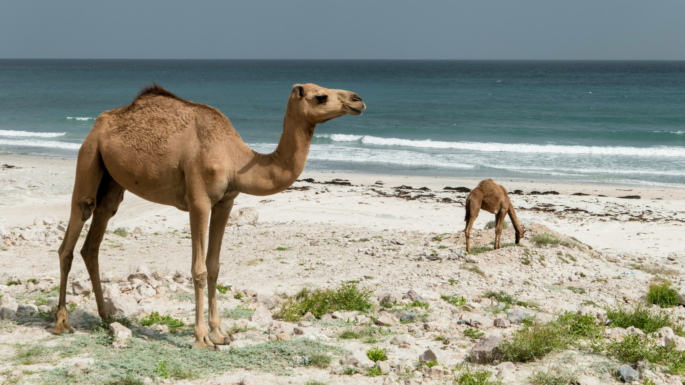
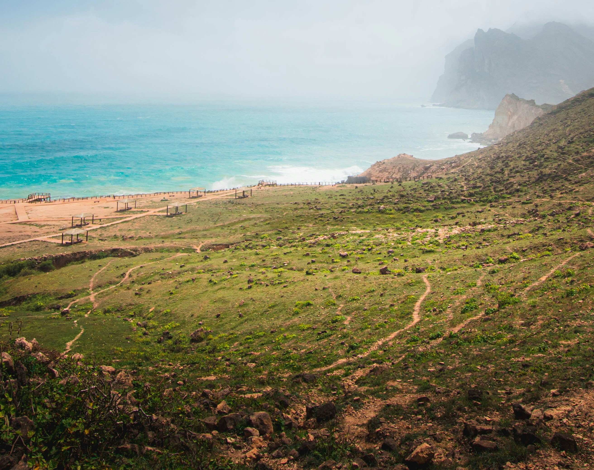
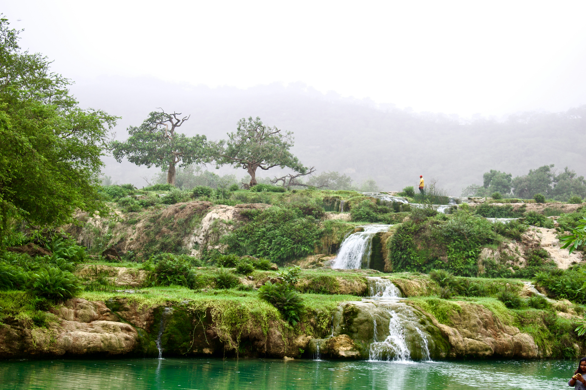
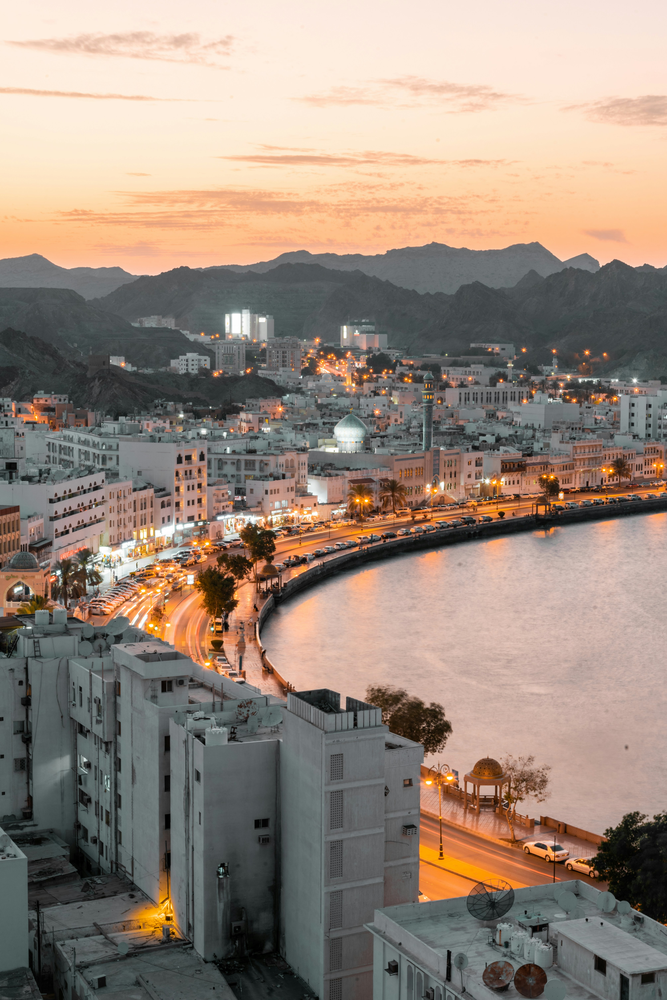

MEMORIES
Why Oman Feels Like Staying in a Memory
Oman has a way of settling into you quietly. It’s the ease of greeting someone in a souq, the calm that rests over the dunes before sunrise, and the familiar scent of frankincense drifting through the air. Tradition isn’t staged here — it’s woven naturally into daily life, creating a sense of continuity that’s hard to forget.
From Salalah’s misty hills to Muscat’s steady coastline, the country offers space to slow down and notice things again: the shape of a mountain ridge, the rhythm of waves against the harbor, the gentleness of a shared cup of tea. Whether you’re exploring an old fort or pausing at a lookout on the drive home, Oman invites you into moments that feel both grounding and quietly meaningful.
FACTS
Quick Facts About Oman

| Capital | Muscat |
|---|---|
| Language | Arabic (official); English widely spoken |
| Currency | Omani Rial (OMR) |
| Best Time to Visit | October – April |
| Highlights | Desert, mountains, wadis, frankincense, pristine coastline |
| Signature Experience | Slow travel — unhurried exploration, warm hospitality, and quiet reflection |
SPOTS
Experiences You Can’t Miss

Al Mughsail Beach
A long stretch of white sand framed by rugged cliffs and the open Indian Ocean. The combination of steady waves and endless horizon makes it one of Salalah’s most beloved coastal views.
Address
Al Mughsail, Dhofar Governorate, Salalah
What's Special
Near Marneef Cave, natural blowholes send bursts of sea mist skyward — a simple yet striking reminder of how alive the coastline is.

Wadi Darbat
A quiet valley known for smooth waters, green slopes, and soft walking paths. During the Khareef season, the landscape transforms, bringing a lushness rare in the region.
Address
Wadi Darbat, Taqah, Dhofar Governorate, Salalah
What's Special
Seasonal waterfalls and the occasional wandering camel create an atmosphere that’s both peaceful and distinctly Omani.

Muttrah Corniche
A shoreline promenade lined with cafés, fishing boats, and mountains that frame Muscat’s harbor. It’s an easy place to simply walk and breathe in the blend of sea wind and city life.
Address
Muttrah Corniche, Muttrah District, Muscat
What's Special
The waterfront glows at sunset, and the nearby Muttrah Souq offers a mix of history, colour, and everyday community life.
GALLERY
Oman In Your Eyes
Discover the Oman travelers fall in love with: sweeping coastlines, mountain drives, desert sunsets, and lush monsoon valleys. These moments capture the country’s natural beauty and warm spirit — each clip a reminder of how unforgettable Oman can be.